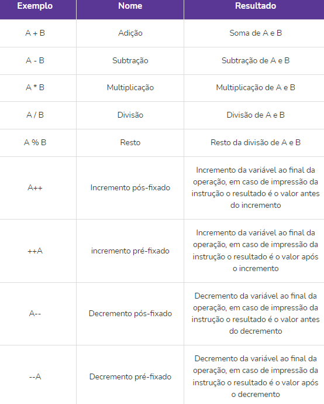
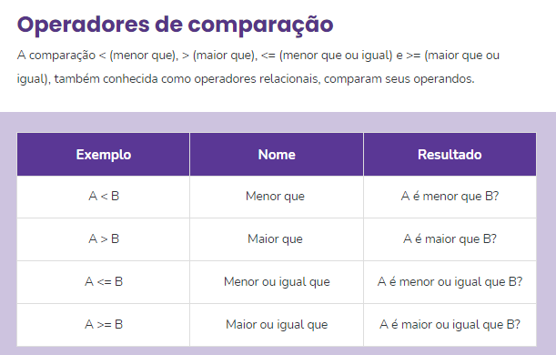
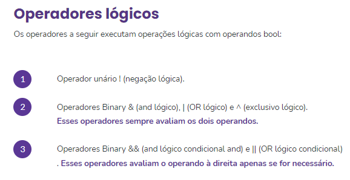
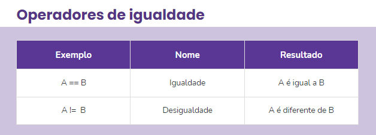

Linguagem C#
O csharp utiliza uma maquina virtual para execução chamada CLR(Common Intermediate Language), que gerencia a execução
Para criar um projeto abra o terminar e entre na pasta desejada, após execute o comando: "dotnet new console"
Para executar use o comando "dotnet run"
Comentarios
Em linha //
Em bloco /* */
Operadores aritméticos

Exemplo
int i = 3;
Console.WriteLine(i); // saída: 3
Console.WriteLine(i--); // saída: 3
Console.WriteLine(i); // saída: 2
Console.WriteLine(--i); // saída: 1
  
Estrutura de controle
IF/ELSE (se/senão)
if( )
{ }
else
{ }
SWITCH/CASE (Faça/caso)
switch( )
{
case 1:
break;
case 2:
break;
default:
break;
}
Estrutura de repetição
FOR (Para)
for(int i=0; i<5; i++)
{ }
WHILE (Enquanto)
int x=0;
while( x<10)
{
x++
}
DO WHILE (Faça/Enquanto)
Quase como o while porem sempre executa uma vez
int x=0;
do
{
x++
} while (n<5)
FOR EACH (PARA PERCORRER)
Usado para percorrer elementos inteiros
var fibNumbers = new List
{ 0, 1, 1, 2, 3, 5, 8, 13 };
int count = 0;
foreach (int element in fibNumbers)
{
Console.WriteLine($"Elemento #{count}: {element}");
count++;
}
Instale o pacote os pacotes e rode na API ou Direto
Desenvolvendo WebApi com .Net:
video